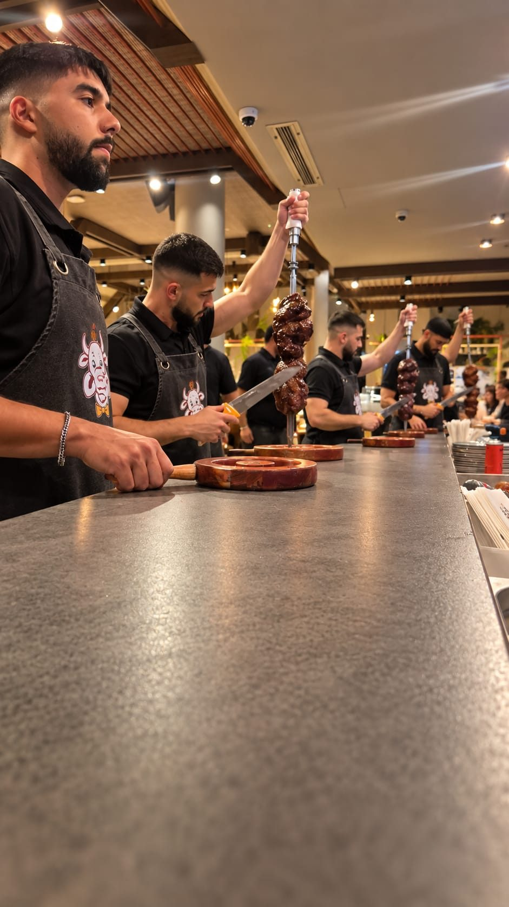

מסעדה מומלצת באילת

אם אתם מחפשים מסעדה מומלצת באילת, אתם צריכים ראשית לדעת איזה סוג של מטבח אתם מחפשים. ישראל כבר ידוע אימצה כמעט את כל מטבחי העולם. יש מסעדות ברזילאיות, מסעדות הודיות, אסיאתיות ועוד. תרבות האכילה במסעדה הפכה לעניין יום יומי אם זה כמקום אליו מגיעים עובדים לאכול ארוחת צהריים, בהתאם להסכם שיש לבעל המסעדה עם חברות מסוימות. בדרך כלל מדובר על עובדים של חברות הייטק.
אין משפחה, זוגות או קבוצות של חברים שלא נפגשים סביב הנושא של האוכל. הוא הפך להיות מרכז העניין של כל אירוע והצגה שלמה למשל של פולחן בשר, אפשר למצוא במסעדה ברזילאית מאוד ידועה באילת. שם, לא רק אוכלים אלא גם מרגישים את הרוח הברזילאית ואת הבוסה נובה באווירה של המקום.
איך בוחרים מסעדה לתיירים?
אם אתם מגיעים לאילת עם תיירים ואתם מחפשים מסעדה מומלצת באילת, נסו לוודא אתם איזה סוג של אוכל הם אוהבים. מה הם מוכנים לנסות ומה הם לא טעמו וישמחו לטעום כמו למשל מנות בשר מיוחדות של מטבח ברזילאי אותנטי.
אם יש לכם אורחים שהם עצמם בני ברזיל, הם בוודאי ישמחו מאוד להגיע למסעדה כזו, ולאכול את האוכל שהם כבר מכירים. זה קורה הרבה בארץ שתיירים סיניים נכנסים למסעדות סיניות ותיירים מברזיל הולכים למסעדה ברזילאית.
אילת מציע הרבה מאוד מסעדות טובות ונחשקות, אבל אל תלכו למסעדה בלי לקבל עליה המלצה אמתית והיום הכול נמצא ברשת. תוכלו להיכנס לאתר שלה, לעבור על התפריט המיוחד שלה ולהחליט מהי המסעדה שהכי מתאימה לכם ולאורחים שלכם.
אל תלכו למטבח רחוק מדי
זה נכון שתיירים אוהבים לחוות אוכל חדש, נופים וחוויות חדשות, אבל חך וטעם אישי לא תמיד פתוח למטבחים שהם שונים מאוד מהמדינה ממנה הגיע התייר. אם אתם רוצים ללכת על בטוח, אל תיקחו את האורחים התיירים שלכם למסעדה שאתם לא בטוחים שהיא מסעדה טובה, וגם אל תיקחו אותם למסעדה שמבשלת לדוגמה אוכל חריף והם בכלל לא מורגלים לחריף. אנחנו לא מדברים על חריף בתור תוספת לצלחת של חומוס, אנחנו מדברים על מנות חריפות שהחריף הוא חלק מהמנה, ולכן הם עלולים לא לעבור בחך של האורחים שלכם.
כדי למצוא מסעדה מומלצת באילת, קראו תגובות על מסעדות. קראו חוות דעת. אם יש למסעדה אתר, והיום כמעט לכל מסעדה יש אתר, תוכלו לראות אם התפריט מעניין אתכם וגם לשתף את האורחים שלכם. הכי לא נעים זה להגיע למסעדה שאין לכם מה לאכול בה או שהאורחים התיירים שלכם לא מוצאים בתפריט משהו שהם אוהבים.
בחרו גם בנוף יפה מול הים
אילת זה ים ושמש וחופים לבנים, וזה בדיוק הנוף שאתם צריכים לחפש כאשר אתם מחפשים מסעדה מומלצת באילת. מסעדה באילת זו לא רק מסעדה זה חבילה אחת שלמה של בריזה מהים, חוף מדהים ותפריט ברזילאי שמח או כל תפריט אחר.
לא סתם מסעדות בוחרות להתמקם באילת למשל בלוקיישנים מסוימים מול הים. יש לזה חלק חשוב ביצירת האווירה של המסעדה והרבה פעמים זה גם מתחבר למטבח המסוים. מסעדה ברזילאית מומלצת באילת קרוב לים, זו הבחירה האולטימטיבית שתעשה לאורחים שלכם לא רק טעים בפה, אלא גם שמח בלב.